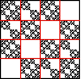
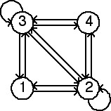

Second Homework Set Answers
2(a)


Note the empty length 2 addresses are 11, 14, 41, and 44. Consequently, the forbidden transitions are
1 → 1,
4 → 1,
1 → 4,
and
4 → 4.
These are the missing arrows in the graph on the right.
Return to
Homework 2 Practice
.